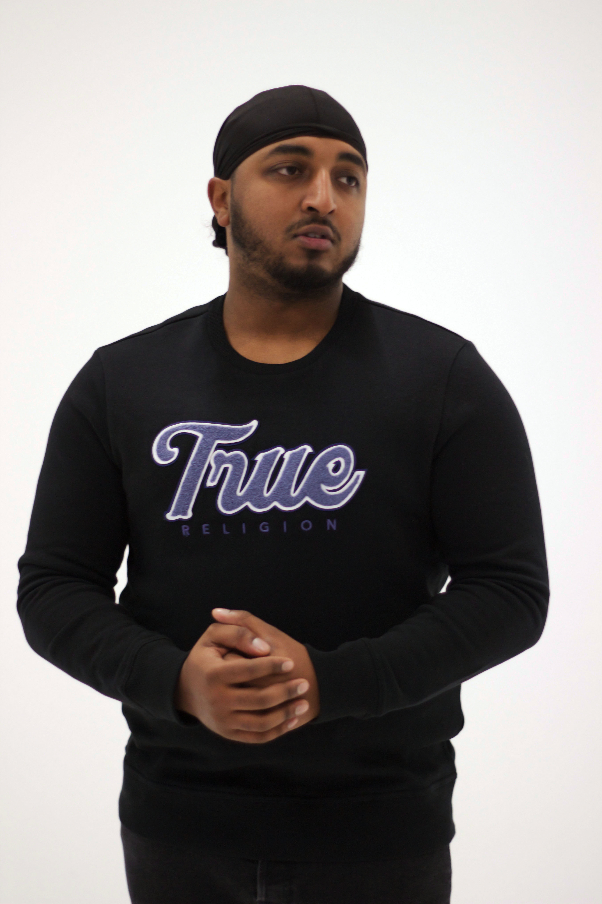
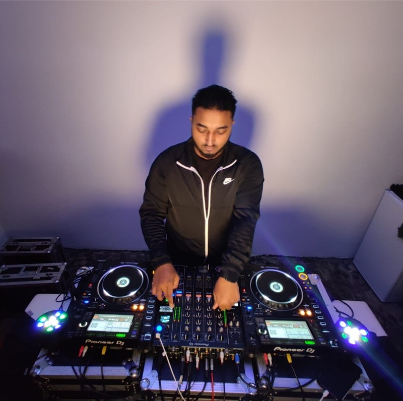
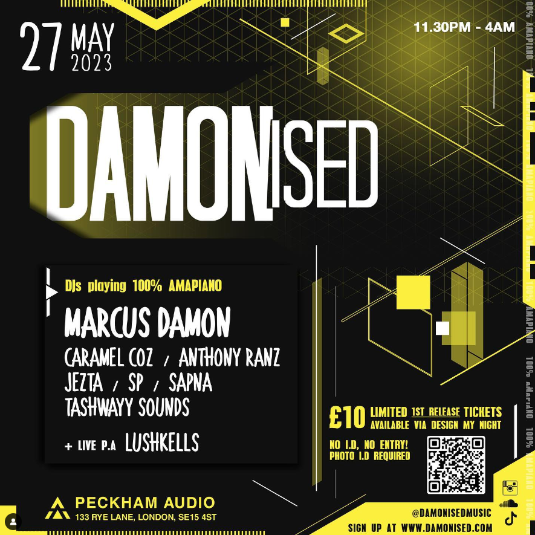

The second time I met Marcus Damon was at houSupa’s event Afrotized. I was talking to another DJ, Glamzino, and had asked him who his favourite London producers were. Glamzino pointed over at Marcus. “This guy,” he said, “is the future.”
In recent years Marcus Damon has been behind some of the most anthemic, instantly-recogniseable releases in the UK’s underground amapiano and Afro-influenced house music scenes, consistently dropping tracks on houSupa, Club Djembe and his own imprint Damonised Music.
He says things could have gone differently: after grinding it out in music for just shy of 15 years and releasing an album that didn’t land how he’d hoped, he was on the verge of taking a break from producing, right before two of his tracks broke into underground radio rotation in 2019. Really though, it’s hard to imagine someone as committed as Marcus putting things on hold. From poking around the back of sound systems, to spending his teenage weekends in pirate radio studios, to carefully observing the mixing styles of his favourite DJs – Marcus has studied his craft. He’s also highly prolific, releasing several EP projects a year on top of a steady stream of singles, collaborating with singers like Mei-Sing and LushKells and producers like Anthony Ranz and Apple.
What stands out about Marcus’ tracks is their hybridity and melodic edge. He’s got a talent for writing hooks that will stick in your head for weeks after hearing them out in the club, melding amapiano with soulful and tech house influences to create music that’s hard to categorise, but feels strongly rooted in the sonic history of his surroundings: London and soundsystem culture.
Having recently launched his imprint Damonised as an event series in London, Marcus is ambitious for the future, hoping to develop the brand for international audiences. The first event looked promising, with a solid following turning out to support his new endeavour. All the while, Marcus remembers the people who helped him get started – continuing to shout out his early days mentors and influences each time he reaches a new milestone.
NKC: What’s your musical background?
Marcus Damon: Informally, my mum used to be a DJ. When I went to christenings and stuff like that and they used to have these big sound systems with the decks – I always thought, how did the music come out of the speakers? How are the vinyls creating this kind of frequency?
I was so wowed by it. From that point on I’ve always had this obsession about how things are plugged in, and the engineering side of things – the sound quality.
NKC: That’s an interesting angle for someone so young, to concentrate on how the speakers were wired up, and how the sounds were being produced. It must have been like magic.
Marcus Damon: I was about six or seven when I was going to these things. You can’t really ask the adults questions because they don’t take you seriously at that age. Now it’s quite different, you can just go on YouTube if you don’t want to ask no one.
From that point, I was trying to get into DJing. My mum bought my first decks when I was ten years old. She bought the ‘Home DJ Mix Kit’ from Argos. Just a standard CD player, two CDs and a mixer in the middle, and it comes with two speakers. She bought me a Pure Garage CD, and I was mixing tunes like ‘Sincere’ and music by Sunship.
That’s where it all started, and from there I just kept building. I went to vinyl – I didn’t go forward, I went back. I wanted to go back to vinyl to get the full DJ effect. DJing started from vinyl, so I needed to go back to see how they do it, and master that skill.
NKC: In your artist bio, you mention DJing hip hop, RnB, soul, jazz, house and garage when you started out. How does that fit in with what you’re doing now?
Marcus Damon: Basically, I just wanted to play what I liked. That’s usually the first reason why people start DJing, they want to play music that they like to the people. When I started, I was heavily into dancehall and reggae, so I was collecting reggae music – I’m talking CDs, like going to CD Bar in Stratford and buying up CDs every week.
I find it easier to create house over a lot of other genres. But now I’ve advanced as a producer, I can make a lot of things. Just the other day I made a dancehall track. I’m trying to be a producer and not be attached to one genre… But that’s a new level thing, that’s like a DJ Khaled thing!
With amapiano stuff now, creating melodies is my thing over the drums and bass. So if you listen to a lot of my amapiano tracks, they’re very melodic.
NKC: You mentioned there were sound systems at christenings, were you around a lot of sound systems at events growing up?
Marcus Damon: I think about 80% of Black people, they’ve been around sound systems, it’s like music drives them. That’s just my opinion. So basically yeah, there’s been a lot of sound systems, a lot of music going on, music every day. I’ve grown up around people who make speakers. It’s just always been in my life.

NKC: Were you into funky house, UK funky, and soulful house when that was popular?
Marcus Damon: I was on pirate radio – Heat FM – when UK funky was popular. We’re talking about 2009/10 and I was 15/16 years old. I’m in the studio playing all these CDs with UK funky and the skank tracks, and people were calling the studio phone and asking me, ‘where’s the place to be?’
I was like, ‘I’m not even old enough to get in the rave!’
So when UK funky was big, I was playing all the tunes, all the top tens, but I can’t really say anything about playing in the clubs, because I was a bit too young to go.
NKC: How long have you been producing music for, tell me about how you got started out?
Marcus Damon: I’ve been producing from secondary school. I got Cubase and other software and just learnt the basics back in 2008. I’m not really the type of person that likes to read on stuff – I know you should – but I like to find these things out.
It’s been trial and error this whole time while I’ve been getting an understanding of production – learning how to put beats together, how to create different patterns, different sounds, what sounds mix together, what plugins are, mastering, the whole thing.
Then when I went to university I started doing recordings. I was helping my friend out at Newbury College, learning how to work behind the desk.
NKC: A lot of your music is focused on melody, harmony, chord progressions – do you play any instruments or have you just picked it up from producing?
Marcus Damon: My college teacher – Sterling Reigns – he’s a sick guy, the top man of his game. He always said: learn basic chords, and then from that you can map things around them.
Sterling Reigns always built in my head that it’s about the fundamentals of everything. Once you’ve got the chords, you’re able to make anything. A lot of people like to focus on drums because it starts hitting quick. But if you learn basic chords, you’re able to make melodies.
With amapiano, you usually get the feel from the shakers, bongo hits, conga hits, and maybe the snare, open hihats. That’ll be the first to go into the track, that will get you started on the feel. Then we add the melody – pads, soft chords, Rhodes, flutes maybe, and add a high lead – that’s how I start.
NKC: Talking about melody, some of your tracks have got this driving, minimal feel that I associate with deep tech house – ‘Ride Out’ for example.
Marcus Damon: With a tune like ‘Ride Out’, which is on Housupa, that’s very techy. That’s because amapiano was new to a lot of people, so I still needed to keep the feel of what they know, to push them into the changeover. So I made a hybrid, with that tech house lead, but ama drums and ama bass.

NKC: The log drum is actually a similar sound to the bass used in some deep tech tracks.
Marcus Damon:I think people get it wrong with how amapiano is perceived sometimes. The log drum isn’t actually always a bassline. It’s part of the drums, it’s just got a bass sound to it. Then the sub plays as the bass.
When people are making ‘UK ama’, they use the log drum in a different way, it’s not a bassline. They’re using it for rolls and it sounds like UK funky. Everyone’s got their own perceptions with making music, it’s about creativity.
NKC: You’ve released a lot of music over the past couple of years, is there something that really sparked you off since around 2019?
Marcus Damon: ‘Pussy Fairy’ definitely sparked off a lot of things. Again, that’s more tech house, it’s just that I made a bass-melody thing. It’s kind of a hybrid. And then after that track, the killer one is ‘Momentum’. That’s the one that sparked everyone, because of the legendary sample behind it… It definitely done the crossover.
Before ‘Momentum’ and ‘Pussy Fairy’, I made an album called Paradise House. That one has about 15 tracks or something, and it didn’t really do so well. I was going to hang it up, I felt like I didn’t want to produce no more, it had taken up a lot of my time and I still wasn’t getting nowhere. And then when I made ‘Pussy Fairy’ and everyone was loving it, and it was getting played on radio and everything, I was like – wow! It’s about time as well!
That definitely drove me after that. I was making loads of music, changing the way I mix down and upgrading how I assemble productions.
NKC: Without giving away the secret sauce, are there any specific sounds, VSTs, or techniques that you usually draw for when you’re producing?
Marcus Damon: You can give all the tools to somebody, it’s how they want to use them. But there is some sauce I’m going to keep!
I use Massive a lot. I like a lot of the sounds on there and I’ve got a lot of packs.
NKC: You have a lot of releases featuring other artists and singers, have you always worked collaboratively?
Marcus Damon: I’ve always believed that having a vocal on a track completes it, because words stay in people’s heads. It’s just another instrument really. So I’ve always wanted singers on my songs. I like mixing their vocals and dealing with different personalities through the mic.
NKC: Do you usually work in studio sessions or by sending projects and files back and forth?
Marcus Damon: LushKells said to me recently, ‘I like the way you direct the session’. I don’t just tell people to come and sing. Firstly, that’s boring for me. Secondly, if you get a note wrong, I’m not going to sit there and let you do wrong, I’m going to make sure it’s right. I’ll sing with you and we can get the track finished together. I have a relationship with my singers where we can do it together, that’s the slogan.
NKC: How do you work with other producers?
Marcus Damon: Recently I’ve been sending stems, because I’m working with people that live in South Africa now. But usually I work with people in the studio together. People have got their percentages, at the end of the day. You want 50 percent, you’ve got to do 50 percent of the work, that’s how I feel. We’ve got to come to an agreement that ‘you’re doing this bit, I’m doing that bit’. I prefer working in person because we can make the edits there and then.
NKC: How do you approach your DJ sets?
Marcus Damon: I take a lot of people’s advice, I do a lot of observations, watching what people who are playing to bigger crowds are doing.
You’ve got to make time for these things, it doesn’t happen overnight. It takes time and discipline. In life, you can do whatever you want. I know some people’s circumstances probably don’t give them time, but you have to try.
Sterling Reigns, he’s the one who made me into the kind of person that I am with DJing. He’s got a studio and I was always there. I was on the decks at music college teaching the younger generation who were doing cyphers and hip hop.
With DJ sets, I pick music based on how I feel it blends together. I don’t put a playlist together, I just go with whatever I feel at the time. I just pick, mix and play. That’s how I deal with it.
I also have a structure while DJing – it’s always vocal-instrumental-vocal-instrumental. You can’t play two vocal tracks at the same time unless the vocals are broken, otherwise you’ll start clashing. You can put two instrumentals together, that’s fine. But to keep the crowd engaged – people like to sing when they’re going out, when they’re drunk – I don’t play instrumentals for the whole set.
NKC: I’ve seen you get quite technical with your DJing, you’re active with FX and delay. Is that live performance aspect of DJing important to you, when you’re not just playing the tracks but doing something new with them?
Marcus Damon: From Sterling Reigns, we go to Anthony Ranz. Now, we all know Anthony Ranz does what he does. I’ve always liked the way he plays house. So I’m observing his DJing and I’m kind of doing something similar. It’s not the same – he’s much more experienced, he’s been DJing longer. But I’ve learnt from Ranz how to get my effects levels up and how to work with timings and using other effects.
I call it sound designing, that’s my thing. I use 1/16ths and 1/8ths delays a lot – it’s crazy to explain, I can’t lie to you. You have to be there and really listen. Sometimes I wow myself, I go back to my mixes and I’m hearing how the effects are used and it’s crazy.
NKC: You’ve shared some debates via your social media about the tempo people play amapiano at in London, could you talk about that?
Marcus Damon: Someone came up to us and said we were playing the music too fast. But 112-114bpm – that’s what amapiano sounds like when you’re at home.
A lot of people have come out to party, we’ve come out to rave it up. So I play it at 117bpm. People can still move – it’s not too fast, it’s not too slow. I can still hear the attributes of the music.
So as long as it’s not crazy fast… I can’t lie to you, 124-125bpm is too fast for ama. Each to their own though, if you can get people moving then that’s cool. I’m not judging, I’m just saying what I’m doing. If you play at 124, then maybe you feel the music differently.
I think people need to understand what they’re playing – remember, this is new to a lot of people. People can get away with a lot of funky sounds with this ama ting, because it’s new. They can play it their way, and the people that come to their raves, if they already got a name for the sound they’re not going to know any better. All they know is that, ‘oh, this sounds like what I used to listen to’, i.e. UK funky.
It’s about understanding the music. Now, again, someone will probably say that what I’m saying don’t make sense, because I don’t play it at the original speed anyway. But when it’s too fast, it’s a different category of music, it’s not the same.
NKC: You launched your event series Damonised recently. What’s the idea behind it and what have you got planned for the future?
Marcus Damon: The Damonised event is about my productions and my experience for the ravers, the people that want to listen to what I’m doing. It’s a personal touch – because I create the music, the productions, it gives people a chance to meet me as a person. Music is based on emotions and as I’m playing it they can feel the music through me.
The first Damonised event was February 17th. It went well. Most of the people that were there, they’re people who have been listening to my music for the past few years, or followed my journey completely.
I’ll be taking Damonised to the next level in the next two to three years. I’m hoping to build the brand to where I’m doing stages at festivals. I want to get into the fashion industry with Damonised as well. It’s another avenue for the brand.
The idea is to make it a global thing and make it suitable for everyone. I’m not on small spaces, I want to go worldwide with this. I want to take Damonised overseas. I’m going to try and get some links to different clubs and venues over the world – Ibiza, Ayia Napa, Zante, even places like Sweden. It’s going to be a great adventure.

NKC: Would you call the scene you’re part of amapiano or Afro house, or something else?
Marcus Damon: I feel like, in 2020, producers were still learning – I’m talking about everyone – about this amapiano sound. So there were people making crossovers. They were calling it amapiano, but it’s actually house or soulful house. At present, everyone has reached a level where they know what they’re doing. They know what sounds to use, how to use them, how to make the swing of the tracks.
Afro house is what Black Koffee plays. That’s how I look at it. He plays Afro tech, that kind of tribal sound. I would not class my music as Afro house. Even ‘Lockdown’ is ama, or it’s ama-influenced. We’ve got to say that, we’ve got to tread carefully on that as well, because people will comment and say, ‘well this ain’t what people make in SA’. So it’s amapiano-influenced.
NKC: Is there anything you think would make the Afro house and amapiano scenes better, are there any negatives?
Marcus Damon: There needs to be more diversity in crowds. Bluntly speaking, white people need to come to our raves as well, and enjoy the vibes the same way.
When you hear dancehall, your first thought is not that there won’t be many white people there at the party. More diversity in the raves is what makes the raves grow. If you’re locked into a certain crowd, you’re always going to get the same people. To grow, you need everyone – you need everyone.